| Home | Booking | Contact Us | Review |
|---|
| Shopping | Hotels | Restaurants |
|---|
About NashikSituated on the banks of the river Godavari, the city of Nashik, also known as Nasik, is a major Hindu pilgrimage center. Nashik is a bustling township with a blend of the ancient and the modern. Scattered across the city are numerous forts and majestic temples that vie for space with factories and other symbols of Modern India. The Kumbh Mela is the major attraction of Nashik. Occurring once every twelve years it draws innumerable devotees to the city. Other attractions around the city include - Pandavleni Caves, Muktidham Temple, Kalaram Temple among others. Day excursions to Shirdi, Someshwar, Wani are also very popular. |
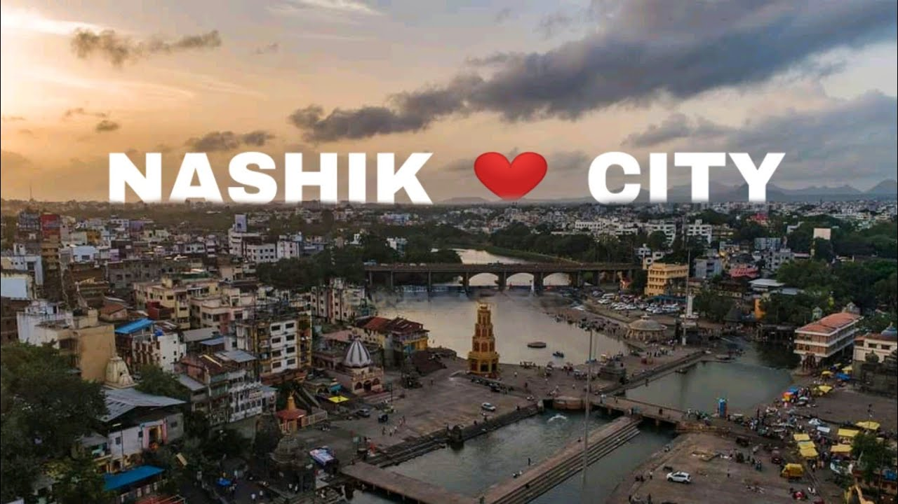 |
| 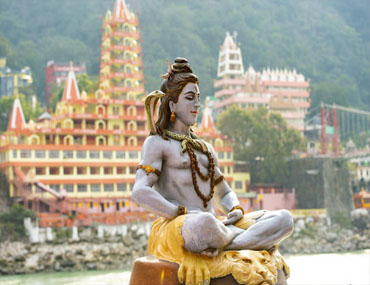 Shree Kapaleshwar Mahadev Temple in Nahik very famous temple Built in 18th century, the unassuming hindu temple is dedicated to lord shiva |
|||
| 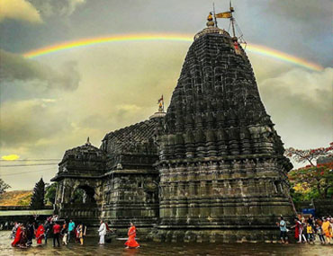 Naroshankar Hindu temple in nashik this famous ,18th-century hindu t emple built for shiva on the riverbank a large bell |
|||
| 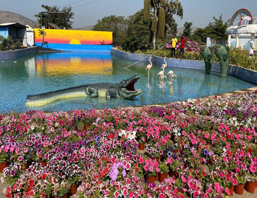 Butterfly Garden Botanical Garden Nashik place in Buddha vihar,pathrdi phata,nashik |
|||
| 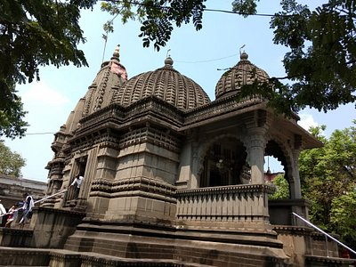 kalaram temple |
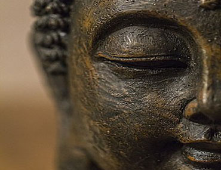 Trirashmi Buddha Smarak in nashik very famous Buddhist temple |
||
| 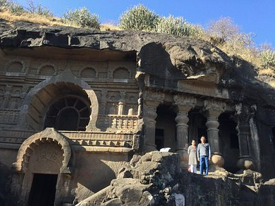 pandav Leni |
|||
| 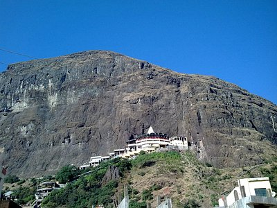 saptashrungi |
|||
| 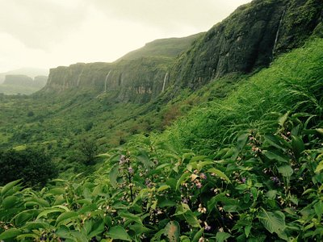 brahmagiri hill |
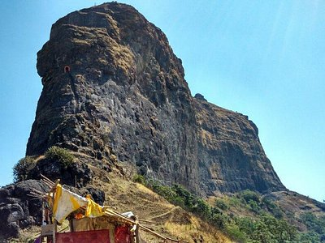 harihar fort |
||
| 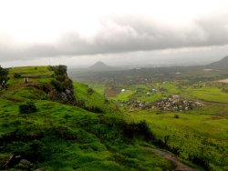 ramshej fort |